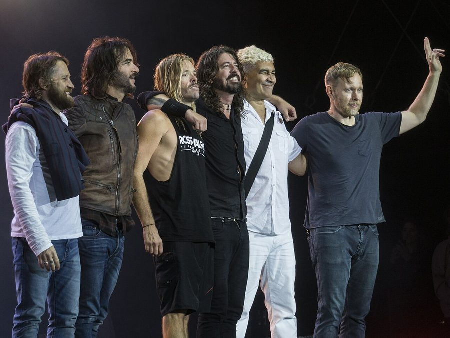

Foo Fighters @ Acer Arena, Sydney (02/05/08)


.jpg){kind=link}
There’s been a sense of distaste growing in some of my Foo Fighter loving mates for quite some time, who reckon they haven’t really brought anything new to the table lately. It’s probably down to the fact that while Echoes, Silence Patience & Grace is a solid album, Dave Grohl and co. managed to capture and perfect their sound so completely on the double-disc bonanza In Your Honour, that their somewhat-limited range possibly couldn’t be taken much further. Do they really have many more stories to tell? Whatever’s the case, it wasn’t much of a surprise that when they hit the stage at the Acer Arena on Friday night, none of that really mattered. Even if they’re running of places to go musically, the Foo Fighters have got enough energy left in their live shows to take them through another several decades at least.
From the opening chords of Let It Die, Grohl threw himself into it with plenty of vigour: running up and down the stage, windmilling his guitar and pointing his dopey rocker gaze in every last direction – because this was a Foo Fighters concert after all, and every last person in the crowd was gonna get at least a little bit of love. Dressed in tight black jeans and t-shirt, accompanied by long dark hair, a full-grown beard and some mighty big chops, Grohl was less a Seattle grunge misfit and more Lemmy from Motorhead. Routinely throwing his arms into the sky and jabbing his finger in the air, it was just so heavy metal. And as he launched into Echoes, Silence Patience & Grace’s other big single The Pretender, all of a sudden he was bolting up and down from one end of the moshpit to the other – seemingly levitating several feet above the crowd. What the hell was going on here? From where I was seated I’d failed to see there was a catwalk stretching throughout the crowd to the back of the stadium, meaning that Grohl could get up close and personal with a much bigger percentage of the general admission punters. He aint known as the most down-to-earth guy in rock n’ roll for nothing!
After the opening medley that also saw Breakdown and Times Like These thrown down in quick succession, he embarked on the first of what was many dialogues with the crowd. “Who remembers when we came here for the Summersault Festival? Who remembers when we came here for the Big Day Out? And who remembers when we came back to headline the Big Day Out?” Apparently we weren’t going to get one of those weaksauce concerts where the band only plays for an hour and fifteen. We were gonna get over two hours. Wow! And at this stage it’s worth noting just how much better the Acer Arena is than the dreaded Entertainment Centre when it comes to large-scale rock gigs like what we enjoyed on Friday night. While it may a pain in the ass be to get to (and even more of a pain in the ass to get home to from … thanks for everything CityRail!), even when you’re up high in the nosebleed section you still feel connected with the energy. And more so, when you’ve got someone like Mr. Grohl hosting the proceedings, you’re made to feel like you’re part of the fun at all times.
And that was when things got weird. Out at the end of the catwalk, a platform slowly lowered itself from the ceiling, and created a whole new space so the band could have perform an acoustic set right out in the middle of the crowd. And I thought to myself, fuck me… What’s going on here? Are we listening to U2 or something? I was almost expecting a giant lemon to pop out from behind the curtains at any moment, and perhaps fall from the stage and roll into the crowd, leaving mayhem and destruction in its wake. But the Foo Fighters haven’t quite reached PopMart levels of hysterical spectacle yet, the band did gather out on the stage to play a few low-key tunes, to laugh and joke with the crowd, guzzle beer and even burp into the microphone several times. How’s that for intimate? Grohl got to tell the story of The Ballad of the Beaconsfield Miners (yes… again, but stop being so damn cynical), and the concert’s most moving moment was when the crew performed an acoustic version of My Hero. It might sound a little naff, but the crowd was so wrapped up in the moment that it was enough to give you shivers.
Eventually Grohl was left out on the platform by himself to perform a few songs, eventually moving into an unplugged rendition of Everlong. This is one of their biggest anthems, and we probably would have preferred to see them belting it out on electric guitars – but the Foo Fighters are the band that just keep on giving. One chorus to go and the full band are hitting the stage again, rocking out and jumping about. And oh lordy, then they moved straight into Monkey Wrench … Hands in the air everybody, rock n’ roll triumphant! And the extended encore was yet to come.
Friday night was heaps of fun for everybody involved, but still for some reason it’s not the sort of gig that people will walk away from and talk about in hushed tones. Dave Grohl is probably better than anyone I’ve ever witnesed at reaching out to every last person in the audience, but this is probably the same thing that prevents his concerts from being an exhilarating rush that blows you off your feet – the most amazing performers have to be just a touch distant. Think back to Rage Against the Machine at the Big Day Out in January: they were like shiny gods up on stage, ready to smite you down at any moment with their divine fury. You’re so in awe of them, because you’re so detached form them. But with the Foo Fighters, you trade in this devilish rock n’ roll euphoria for the sake of feeling such a genuine connection with the frontman: Dave Grohl makes you feel like here’s there for you, even when you’re only one person amongst a 15,000+ strong crowd. So who cares if they may never put out another interesting or exciting album … Long live the Foo Fighters.